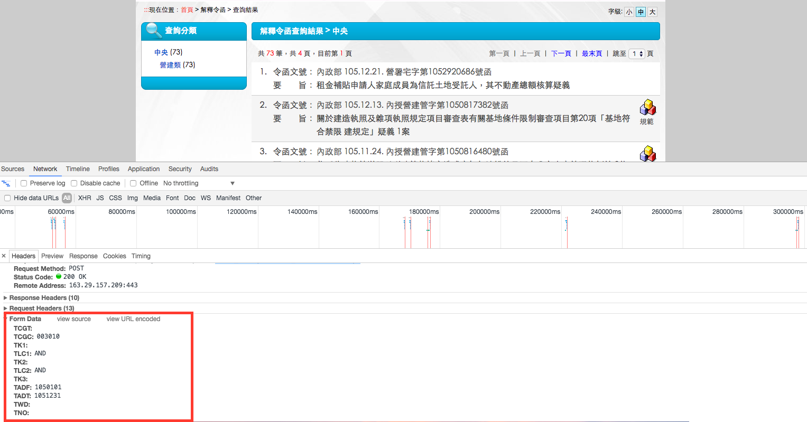
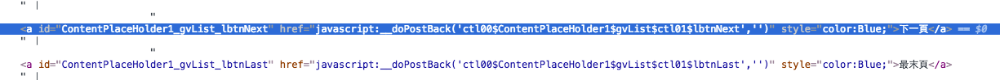
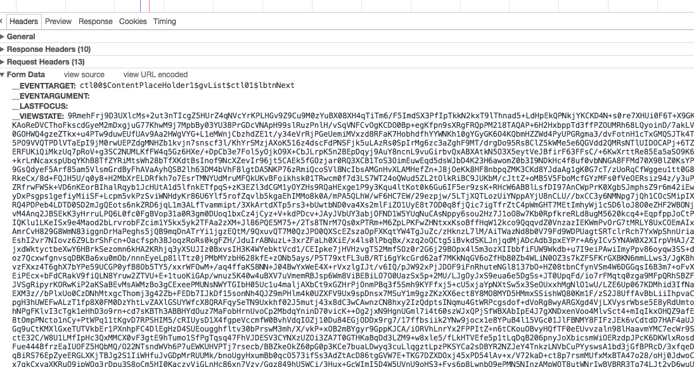
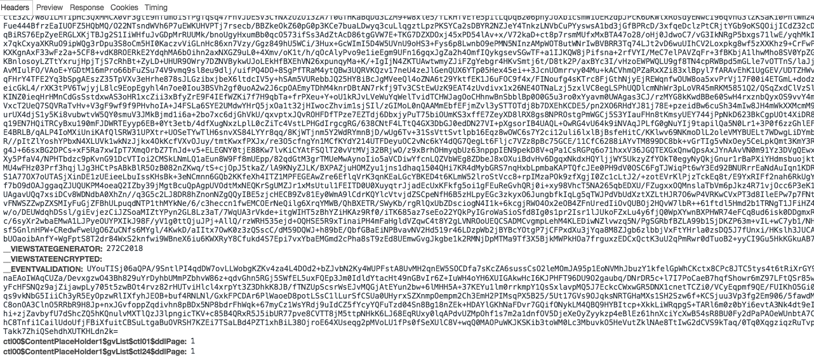

<!DOCTYPE html>
<html>
<head><meta name="generator" content="Hexo 3.8.0">
  <meta charset="utf-8">
  
  <title>Node.js爬蟲實戰：如何query動態網頁資料 | Alex Liang</title>
  <meta name="viewport" content="width=device-width, initial-scale=1, maximum-scale=1">
  <meta name="description" content="前陣子工作上需要寫爬蟲撈政府機關的資料回來，一般的靜態網頁可以由URL的規則找到資料連結，而動態網頁常無法使用此方式。最常遇到的是client端按下button後送javascript的動作給後端，然後才render網頁。  這篇簡單記錄如何抓取這類型網站的資料。">
<meta name="keywords" content="Node.js">
<meta property="og:type" content="article">
<meta property="og:title" content="Node.js爬蟲實戰：如何query動態網頁資料">
<meta property="og:url" content="http://alexliang.me/Node-js爬蟲實戰：如何query動態網頁資料/index.html">
<meta property="og:site_name" content="Alex Liang">
<meta property="og:description" content="前陣子工作上需要寫爬蟲撈政府機關的資料回來，一般的靜態網頁可以由URL的規則找到資料連結，而動態網頁常無法使用此方式。最常遇到的是client端按下button後送javascript的動作給後端，然後才render網頁。  這篇簡單記錄如何抓取這類型網站的資料。">
<meta property="og:locale" content="zh-tw">
<meta property="og:image" content="http://alexliang.me/Node-js爬蟲實戰：如何query動態網頁資料/FormData.png">
<meta property="og:image" content="http://alexliang.me/Node-js爬蟲實戰：如何query動態網頁資料/NextPage.png">
<meta property="og:image" content="http://alexliang.me/Node-js爬蟲實戰：如何query動態網頁資料/NextPageQuery1.png">
<meta property="og:image" content="http://alexliang.me/Node-js爬蟲實戰：如何query動態網頁資料/NextPageQuery2.png">
<meta property="og:updated_time" content="2017-02-05T13:09:00.000Z">
<meta name="twitter:card" content="summary">
<meta name="twitter:title" content="Node.js爬蟲實戰：如何query動態網頁資料">
<meta name="twitter:description" content="前陣子工作上需要寫爬蟲撈政府機關的資料回來，一般的靜態網頁可以由URL的規則找到資料連結，而動態網頁常無法使用此方式。最常遇到的是client端按下button後送javascript的動作給後端，然後才render網頁。  這篇簡單記錄如何抓取這類型網站的資料。">
<meta name="twitter:image" content="http://alexliang.me/Node-js爬蟲實戰：如何query動態網頁資料/FormData.png">
  
    <link rel="alternate" href="/atom.xml" title="Alex Liang" type="application/atom+xml">
  
  
  
    <link href="//fonts.googleapis.com/css?family=Source+Code+Pro" rel="stylesheet" type="text/css">
  

  <link rel="stylesheet" href="https://maxcdn.bootstrapcdn.com/bootstrap/3.3.6/css/bootstrap.min.css" integrity="sha384-1q8mTJOASx8j1Au+a5WDVnPi2lkFfwwEAa8hDDdjZlpLegxhjVME1fgjWPGmkzs7" crossorigin="anonymous">

  <link rel="stylesheet" href="https://maxcdn.bootstrapcdn.com/font-awesome/4.5.0/css/font-awesome.min.css" integrity="sha384-XdYbMnZ/QjLh6iI4ogqCTaIjrFk87ip+ekIjefZch0Y+PvJ8CDYtEs1ipDmPorQ+" crossorigin="anonymous">

  <link rel="stylesheet" href="/css/styles.css">
  
<!-- Google Analytics -->
<script type="text/javascript">
(function(i,s,o,g,r,a,m){i['GoogleAnalyticsObject']=r;i[r]=i[r]||function(){
(i[r].q=i[r].q||[]).push(arguments)},i[r].l=1*new Date();a=s.createElement(o),
m=s.getElementsByTagName(o)[0];a.async=1;a.src=g;m.parentNode.insertBefore(a,m)
})(window,document,'script','//www.google-analytics.com/analytics.js','ga');

ga('create', 'UA-81216364-1', 'auto');
ga('send', 'pageview');

</script>
<!-- End Google Analytics -->


</head>
</html>
<body>
  <nav class="navbar navbar-inverse">
  <div class="container">
    <!-- Brand and toggle get grouped for better mobile display -->
    <div class="navbar-header">
      <button type="button" class="navbar-toggle collapsed" data-toggle="collapse" data-target="#main-menu-navbar" aria-expanded="false">
        <span class="sr-only">Toggle navigation</span>
        <span class="icon-bar"></span>
        <span class="icon-bar"></span>
        <span class="icon-bar"></span>
      </button>
      
    </div>

    <!-- Collect the nav links, forms, and other content for toggling -->
    <div class="collapse navbar-collapse" id="main-menu-navbar">
      <ul class="nav navbar-nav">
        
          <li><a class href="/index.html">Home</a></li>
        
          <li><a class href="/archives/">Archives</a></li>
        
      </ul>

      <!--
      <ul class="nav navbar-nav navbar-right">
        
          <li><a href="/atom.xml" title="RSS Feed"><i class="fa fa-rss"></i></a></li>
        
      </ul>
      -->
    </div><!-- /.navbar-collapse -->
  </div><!-- /.container-fluid -->
</nav>

  
  <div class="container">
    <div class="blog-header">
  <h1 class="blog-title">Alex Liang</h1>
  
    <p class="lead blog-description">在新創公司擔任軟體工程師，記錄我的學習歷程</p>
  
</div>

    <div class="row">
        <div class="col-sm-8 blog-main">
          <article id="post-Node-js爬蟲實戰：如何query動態網頁資料" class="article article-type-post" itemscope itemprop="blogPost">

  <header class="article-header">
    
  
    <h1 class="article-title" itemprop="name">
      Node.js爬蟲實戰：如何query動態網頁資料
    </h1>
  


  </header>

  <div class="article-meta">
    <div class="article-datetime">
  <a href="/Node-js爬蟲實戰：如何query動態網頁資料/" class="article-date"><time datetime="2017-02-05T12:00:49.000Z" itemprop="datePublished">2017-02-05</time></a>
</div>

    
    

  </div>
  <div class="article-inner">

    <div class="article-entry" itemprop="articleBody">
      
        <p> 前陣子工作上需要寫爬蟲撈政府機關的資料回來，一般的靜態網頁可以由URL的規則找到資料連結，而動態網頁常無法使用此方式。最常遇到的是client端按下button後送javascript的動作給後端，然後才render網頁。</p>
<p> 這篇簡單記錄如何抓取這類型網站的資料。<br> <a id="more"></a></p>
<p> 我們以<a href="https://www.laws.taipei.gov.tw/lawsystem/wfLaw_Interpretation_SearchResult.aspx" target="_blank" rel="noopener">北市府法規局</a>網站為例，使用chrome的開發者工具。<br> 這裡分成2個部分：</p>
<ol>
<li>檢視送出query的header帶了哪些參數</li>
<li>觀察取得下一頁資料時，header又加入哪些參數</li>
</ol>
<p>一開始我們先測試最少需要哪些輸入才能查詢，在這個例子中至少需要勾選一個類別加上發布期間才能query資料。假設查詢營建類，從105年1月1日到105年12月31日。開啟開發人員工具，進入Network頁面，此時按”送出查詢”。</p>
<p> 在Network頁面下，我們找到wfLaw_Interpretation_SearchResult.aspx，點進去後可看到以下畫面：<br> <br> 紅色框起來的部分便是query送出的表格資料，這裡可以看到有三個欄位需要控制：’TCGC’, ‘TADF’及’TADT’。程式需要二個套件: request和cheerio，前者可送出HTTP request;後者可以把回傳的網頁資料透過類似jQuery的selector抓取需要的內容</p>
<figure class="highlight javascript"><figcaption><span>app.js</span></figcaption><table><tr><td class="gutter"><pre><span class="line">1</span><br><span class="line">2</span><br><span class="line">3</span><br><span class="line">4</span><br><span class="line">5</span><br><span class="line">6</span><br><span class="line">7</span><br><span class="line">8</span><br><span class="line">9</span><br><span class="line">10</span><br><span class="line">11</span><br><span class="line">12</span><br><span class="line">13</span><br><span class="line">14</span><br><span class="line">15</span><br><span class="line">16</span><br><span class="line">17</span><br><span class="line">18</span><br><span class="line">19</span><br><span class="line">20</span><br><span class="line">21</span><br><span class="line">22</span><br><span class="line">23</span><br><span class="line">24</span><br><span class="line">25</span><br><span class="line">26</span><br><span class="line">27</span><br><span class="line">28</span><br><span class="line">29</span><br><span class="line">30</span><br></pre></td><td class="code"><pre><span class="line"><span class="keyword">const</span> Request = <span class="built_in">require</span>(<span class="string">'request'</span>);</span><br><span class="line"><span class="keyword">const</span> cheerio = <span class="built_in">require</span>(<span class="string">'cheerio'</span>);</span><br><span class="line"></span><br><span class="line"><span class="keyword">const</span> request = Request.defaults(&#123;</span><br><span class="line">  jar: <span class="literal">true</span>,</span><br><span class="line">  timeout: <span class="number">60</span> * <span class="number">1000</span>,</span><br><span class="line">&#125;);</span><br><span class="line"></span><br><span class="line">request.post(&#123;</span><br><span class="line">  url: <span class="string">'http://www.laws.taipei.gov.tw/lawsystem/wfLaw_Interpretation_SearchResult.aspx'</span>,</span><br><span class="line">  form: &#123;</span><br><span class="line">    TCGC: <span class="string">'003008'</span>,</span><br><span class="line">    TLC1: <span class="string">'AND'</span>,</span><br><span class="line">    TLC2: <span class="string">'AND'</span>,</span><br><span class="line">    TADF: <span class="string">'1010604'</span>,</span><br><span class="line">    TADT: <span class="string">'1010604'</span></span><br><span class="line">  &#125;,</span><br><span class="line">&#125;, (error, response, body) =&gt; &#123;</span><br><span class="line">  <span class="keyword">if</span> (error) &#123;</span><br><span class="line">    <span class="built_in">console</span>.error(error);</span><br><span class="line">  &#125;</span><br><span class="line">  <span class="keyword">if</span> (response.statusCode !== <span class="number">200</span>) &#123;</span><br><span class="line">    <span class="built_in">console</span>.log(response.statusCode);</span><br><span class="line">  &#125;</span><br><span class="line"></span><br><span class="line">  <span class="keyword">const</span> $ = cheerio.load(body);</span><br><span class="line">  <span class="keyword">const</span> span = $(<span class="string">'#ContentPlaceHolder1_gvList_lblRecordCount'</span>);</span><br><span class="line">  <span class="keyword">let</span> count = $(span[<span class="number">0</span>]).text();</span><br><span class="line">  <span class="built_in">console</span>.log(<span class="string">`Query結果共<span class="subst">$&#123;count&#125;</span>筆資料`</span>);</span><br><span class="line">&#125;);</span><br></pre></td></tr></table></figure>
<p>這段程式碼會印出query結果的資料數量。到此解決第一部分。<br>如果query數量超過一頁的上限，想抓取下一頁的資料會發現HTML並無下一頁的連結<br></p>
<p>它是透過javascript去產生下一頁的結果，我們使用開發者工具觀察點擊下一頁的動作：<br><br></p>
<p>Form Data有</p>
<ol>
<li>_EVENTTARGET</li>
<li>_VIEWSTATE</li>
<li>_VIEWGERNERATOR</li>
<li>_EVENTVALIDATION</li>
<li>ctl00$ContentPlaceHolder1$gvList$ctl01$ddlPage</li>
<li>ctl00$ContentPlaceHolder1$gvList$ctl24$ddlPage</li>
</ol>
<p>這6個值，其中_EVENTTARGET是固定的；ctl00$ContentPlaceHolder1$gvList$ctl01$ddlPage和ctl00$ContentPlaceHolder1$gvList$ctl24$ddlPage為從第幾頁過來和目前頁數-1</p>
<p>而2, 3, 4這三個值與cookie有關，在前一頁可取出這些值。於是程式碼需改寫成：</p>
<figure class="highlight javascript"><figcaption><span>app.js</span></figcaption><table><tr><td class="gutter"><pre><span class="line">1</span><br><span class="line">2</span><br><span class="line">3</span><br><span class="line">4</span><br><span class="line">5</span><br><span class="line">6</span><br><span class="line">7</span><br><span class="line">8</span><br><span class="line">9</span><br><span class="line">10</span><br><span class="line">11</span><br><span class="line">12</span><br><span class="line">13</span><br><span class="line">14</span><br><span class="line">15</span><br><span class="line">16</span><br><span class="line">17</span><br><span class="line">18</span><br><span class="line">19</span><br><span class="line">20</span><br><span class="line">21</span><br><span class="line">22</span><br><span class="line">23</span><br><span class="line">24</span><br><span class="line">25</span><br><span class="line">26</span><br><span class="line">27</span><br><span class="line">28</span><br><span class="line">29</span><br><span class="line">30</span><br><span class="line">31</span><br><span class="line">32</span><br><span class="line">33</span><br><span class="line">34</span><br><span class="line">35</span><br><span class="line">36</span><br><span class="line">37</span><br><span class="line">38</span><br><span class="line">39</span><br><span class="line">40</span><br><span class="line">41</span><br><span class="line">42</span><br><span class="line">43</span><br><span class="line">44</span><br><span class="line">45</span><br><span class="line">46</span><br><span class="line">47</span><br><span class="line">48</span><br><span class="line">49</span><br><span class="line">50</span><br></pre></td><td class="code"><pre><span class="line"><span class="keyword">const</span> Request = <span class="built_in">require</span>(<span class="string">'request'</span>);</span><br><span class="line"><span class="keyword">const</span> cheerio = <span class="built_in">require</span>(<span class="string">'cheerio'</span>);</span><br><span class="line"></span><br><span class="line"><span class="keyword">const</span> request = Request.defaults(&#123;</span><br><span class="line">  jar: <span class="literal">true</span>,</span><br><span class="line">  timeout: <span class="number">60</span> * <span class="number">1000</span>,</span><br><span class="line">&#125;);</span><br><span class="line"></span><br><span class="line">request.post(&#123;</span><br><span class="line">  url: <span class="string">'http://www.laws.taipei.gov.tw/lawsystem/wfLaw_Interpretation_SearchResult.aspx'</span>,</span><br><span class="line">  form: &#123;</span><br><span class="line">    TCGC: <span class="string">'003010'</span>,</span><br><span class="line">    TLC1: <span class="string">'AND'</span>,</span><br><span class="line">    TLC2: <span class="string">'AND'</span>,</span><br><span class="line">    TADF: <span class="string">'1050101'</span>,</span><br><span class="line">    TADT: <span class="string">'1051231'</span></span><br><span class="line">  &#125;,</span><br><span class="line">&#125;, (error, response, body) =&gt; &#123;</span><br><span class="line">  <span class="keyword">if</span> (error) &#123;</span><br><span class="line">    <span class="built_in">console</span>.error(error);</span><br><span class="line">  &#125;</span><br><span class="line">  <span class="keyword">if</span> (response.statusCode !== <span class="number">200</span>) &#123;</span><br><span class="line">    <span class="built_in">console</span>.log(response.statusCode);</span><br><span class="line">  &#125;</span><br><span class="line"></span><br><span class="line">  <span class="keyword">const</span> $ = cheerio.load(body);</span><br><span class="line">  <span class="comment">// Get next page raw HTML</span></span><br><span class="line">  <span class="keyword">const</span> eventValidation = $(<span class="string">'#__EVENTVALIDATION'</span>).val();</span><br><span class="line">  <span class="keyword">const</span> viewState = $(<span class="string">'#__VIEWSTATE'</span>).val();</span><br><span class="line">  <span class="keyword">const</span> viewStateGenerator = $(<span class="string">'#__VIEWSTATEGENERATOR'</span>).val();</span><br><span class="line"></span><br><span class="line">  request.post(&#123;</span><br><span class="line">      url:  <span class="string">'http://www.laws.taipei.gov.tw/lawsystem/wfLaw_Interpretation_SearchResult.aspx'</span>,</span><br><span class="line">      form: &#123;</span><br><span class="line">        __EVENTTARGET:                                  <span class="string">'ctl00$ContentPlaceHolder1$gvList$ctl01$ddlPage'</span>,</span><br><span class="line">        __VIEWSTATE:                                    viewState,</span><br><span class="line">        __VIEWSTATEGENERATOR:                           viewStateGenerator,</span><br><span class="line">        __EVENTVALIDATION:                              eventValidation,</span><br><span class="line">        ctl00$ContentPlaceHolder1$gvList$ctl01$ddlPage: <span class="number">1</span>,</span><br><span class="line">        ctl00$ContentPlaceHolder1$gvList$ctl24$ddlPage: <span class="number">1</span></span><br><span class="line">      &#125;,</span><br><span class="line">    &#125;, (err, resp, nextPage) =&gt; &#123;</span><br><span class="line">      <span class="keyword">if</span> (err) &#123;</span><br><span class="line">        <span class="built_in">console</span>.error(err);</span><br><span class="line">        callback(err);</span><br><span class="line">        <span class="keyword">return</span>;</span><br><span class="line">      &#125;</span><br><span class="line">      <span class="built_in">console</span>.log(nextPage);</span><br><span class="line">    &#125;);</span><br><span class="line">  &#125;);</span><br></pre></td></tr></table></figure>
<p>取得第一個頁面後，記下view state等內容，再送出一個request並帶入剛才得到的狀態。如此可印出下一頁的內容。</p>
<p>最後給個提醒，面對這種動態網站時，如果我們使用async queue一次跑多個worker抓取資料，request的設定就不能使用default。原因是很有可能不同worker會用到同一個request object去query，假如A worker在抓取第二頁時，B worker送出另一個第二頁的query，會發生回傳內容不如預期的情況。<br>這時我們需要改變request object為區域變數，並且使用request.jar()取得custom cookie jar，範例如下：</p>
<figure class="highlight javascript"><figcaption><span>app.js</span></figcaption><table><tr><td class="gutter"><pre><span class="line">1</span><br><span class="line">2</span><br><span class="line">3</span><br><span class="line">4</span><br><span class="line">5</span><br><span class="line">6</span><br><span class="line">7</span><br></pre></td><td class="code"><pre><span class="line"><span class="function"><span class="keyword">function</span> <span class="title">crawler4DynamicPage</span>(<span class="params"></span>) </span>&#123;</span><br><span class="line">	<span class="keyword">const</span> customJar = request.jar();</span><br><span class="line">  	<span class="keyword">const</span> options = &#123;</span><br><span class="line">    	jar:     customJar,</span><br><span class="line">    	timeout: <span class="number">60</span> * <span class="number">1000</span>,</span><br><span class="line">  	&#125;;</span><br><span class="line">&#125;</span><br></pre></td></tr></table></figure>
<p>送query時再帶入options，這樣才能避免worker之間打架的情形</p>
<p><a href="http://yhsiang.logdown.com/posts/2014/05/10/how-to-write-a-crawler" target="_blank" rel="noopener">參考資料</a></p>

      
    </div>

    
      

    

    <footer class="article-footer">
      <a data-url="http://alexliang.me/Node-js爬蟲實戰：如何query動態網頁資料/" data-id="ckbf2ql36003jrxp4ado72ffi" class="article-share-link">
        <i class="fa fa-share"></i> Share
      </a>
      
<section class="comments" id="comments">
  <h2>留言版</h2>
  <div id="disqus_thread">
    <noscript>Please enable JavaScript to view the
      <a href="https://disqus.com/?ref_noscript">comments powered by Disqus.</a></noscript>
  </div>
</section>


  
    <span class="comments-count">
      <span class="post-meta-item-icon">
    	<i class="fas fa-comment"></i>
      </span>
      <a href="http://alexliang.me/Node-js爬蟲實戰：如何query動態網頁資料/#disqus_thread" class="article-comment-count" data-disqus-identifier="Node-js爬蟲實戰：如何query動態網頁資料/" itemprop="discussionUrl">
      </a>
    </span>
   
      
  <ul class="article-tag-list"><li class="article-tag-list-item"><a class="article-tag-list-link" href="/tags/Node-js/">Node.js</a></li></ul>


    </footer>
  </div>
  
    
<ul id="article-nav" class="nav nav-pills nav-justified">
  
  <li role="presentation">
    <a href="/MongoDB初探及CRUD筆記/" id="article-nav-older" class="article-nav-link-wrap">
      <i class="fa fa-chevron-left pull-left"></i>
      <span class="article-nav-link-title">MongoDB初探及CRUD筆記</span>
    </a>
  </li>
  
  
  <li role="presentation">
    <a href="/MongoDB-Aggregation介紹/" id="article-nav-newer" class="article-nav-link-wrap">
      <span class="article-nav-link-title">MongoDB Aggregation介紹</span>
      <i class="fa fa-chevron-right pull-right"></i>
    </a>
  </li>
  
</ul>


  
</article>


        </div>
        <div class="col-sm-3 col-sm-offset-1 blog-sidebar">
          
  <div class="sidebar-module sidebar-module-inset">
  <h4>About</h4>
  <p>喜歡學習新技能，期許自己一步步往商業和技術並重的工程師前進。<a href="mailto:alex.ycliang@gmail.com">連絡我</a></p>
  
</div>


  

  
  <div class="sidebar-module">
    <h4>Tags</h4>
    <ul class="sidebar-module-list"><li class="sidebar-module-list-item"><a class="sidebar-module-list-link" href="/tags/ELK/">ELK</a><span class="sidebar-module-list-count">1</span></li><li class="sidebar-module-list-item"><a class="sidebar-module-list-link" href="/tags/MongoDB/">MongoDB</a><span class="sidebar-module-list-count">4</span></li><li class="sidebar-module-list-item"><a class="sidebar-module-list-link" href="/tags/Node-js/">Node.js</a><span class="sidebar-module-list-count">8</span></li><li class="sidebar-module-list-item"><a class="sidebar-module-list-link" href="/tags/React/">React</a><span class="sidebar-module-list-count">3</span></li><li class="sidebar-module-list-item"><a class="sidebar-module-list-link" href="/tags/aws/">aws</a><span class="sidebar-module-list-count">1</span></li><li class="sidebar-module-list-item"><a class="sidebar-module-list-link" href="/tags/backend/">backend</a><span class="sidebar-module-list-count">1</span></li><li class="sidebar-module-list-item"><a class="sidebar-module-list-link" href="/tags/devops/">devops</a><span class="sidebar-module-list-count">1</span></li><li class="sidebar-module-list-item"><a class="sidebar-module-list-link" href="/tags/elk/">elk</a><span class="sidebar-module-list-count">1</span></li><li class="sidebar-module-list-item"><a class="sidebar-module-list-link" href="/tags/front-end/">front-end</a><span class="sidebar-module-list-count">5</span></li><li class="sidebar-module-list-item"><a class="sidebar-module-list-link" href="/tags/heroku/">heroku</a><span class="sidebar-module-list-count">4</span></li><li class="sidebar-module-list-item"><a class="sidebar-module-list-link" href="/tags/ios/">ios</a><span class="sidebar-module-list-count">9</span></li><li class="sidebar-module-list-item"><a class="sidebar-module-list-link" href="/tags/javascript/">javascript</a><span class="sidebar-module-list-count">12</span></li><li class="sidebar-module-list-item"><a class="sidebar-module-list-link" href="/tags/koa/">koa</a><span class="sidebar-module-list-count">1</span></li><li class="sidebar-module-list-item"><a class="sidebar-module-list-link" href="/tags/mongodb/">mongodb</a><span class="sidebar-module-list-count">2</span></li><li class="sidebar-module-list-item"><a class="sidebar-module-list-link" href="/tags/rails/">rails</a><span class="sidebar-module-list-count">18</span></li><li class="sidebar-module-list-item"><a class="sidebar-module-list-link" href="/tags/soft-skill/">soft skill</a><span class="sidebar-module-list-count">2</span></li><li class="sidebar-module-list-item"><a class="sidebar-module-list-link" href="/tags/swift/">swift</a><span class="sidebar-module-list-count">14</span></li><li class="sidebar-module-list-item"><a class="sidebar-module-list-link" href="/tags/演講筆記/">演講筆記</a><span class="sidebar-module-list-count">2</span></li><li class="sidebar-module-list-item"><a class="sidebar-module-list-link" href="/tags/讀書筆記/">讀書筆記</a><span class="sidebar-module-list-count">3</span></li></ul>
  </div>


  
  <div class="sidebar-module">
    <h4>Tag Cloud</h4>
    <p class="tagcloud">
      <a href="/tags/ELK/" style="font-size: 10px;">ELK</a> <a href="/tags/MongoDB/" style="font-size: 13.33px;">MongoDB</a> <a href="/tags/Node-js/" style="font-size: 15.56px;">Node.js</a> <a href="/tags/React/" style="font-size: 12.22px;">React</a> <a href="/tags/aws/" style="font-size: 10px;">aws</a> <a href="/tags/backend/" style="font-size: 10px;">backend</a> <a href="/tags/devops/" style="font-size: 10px;">devops</a> <a href="/tags/elk/" style="font-size: 10px;">elk</a> <a href="/tags/front-end/" style="font-size: 14.44px;">front-end</a> <a href="/tags/heroku/" style="font-size: 13.33px;">heroku</a> <a href="/tags/ios/" style="font-size: 16.67px;">ios</a> <a href="/tags/javascript/" style="font-size: 17.78px;">javascript</a> <a href="/tags/koa/" style="font-size: 10px;">koa</a> <a href="/tags/mongodb/" style="font-size: 11.11px;">mongodb</a> <a href="/tags/rails/" style="font-size: 20px;">rails</a> <a href="/tags/soft-skill/" style="font-size: 11.11px;">soft skill</a> <a href="/tags/swift/" style="font-size: 18.89px;">swift</a> <a href="/tags/演講筆記/" style="font-size: 11.11px;">演講筆記</a> <a href="/tags/讀書筆記/" style="font-size: 12.22px;">讀書筆記</a>
    </p>
  </div>


  
  <div class="sidebar-module">
    <h4>Archives</h4>
    <ul class="sidebar-module-list"><li class="sidebar-module-list-item"><a class="sidebar-module-list-link" href="/archives/2020/06/">六月 2020</a><span class="sidebar-module-list-count">1</span></li><li class="sidebar-module-list-item"><a class="sidebar-module-list-link" href="/archives/2019/01/">一月 2019</a><span class="sidebar-module-list-count">3</span></li><li class="sidebar-module-list-item"><a class="sidebar-module-list-link" href="/archives/2018/10/">十月 2018</a><span class="sidebar-module-list-count">1</span></li><li class="sidebar-module-list-item"><a class="sidebar-module-list-link" href="/archives/2018/06/">六月 2018</a><span class="sidebar-module-list-count">3</span></li><li class="sidebar-module-list-item"><a class="sidebar-module-list-link" href="/archives/2018/04/">四月 2018</a><span class="sidebar-module-list-count">2</span></li><li class="sidebar-module-list-item"><a class="sidebar-module-list-link" href="/archives/2017/07/">七月 2017</a><span class="sidebar-module-list-count">1</span></li><li class="sidebar-module-list-item"><a class="sidebar-module-list-link" href="/archives/2017/06/">六月 2017</a><span class="sidebar-module-list-count">1</span></li><li class="sidebar-module-list-item"><a class="sidebar-module-list-link" href="/archives/2017/04/">四月 2017</a><span class="sidebar-module-list-count">1</span></li><li class="sidebar-module-list-item"><a class="sidebar-module-list-link" href="/archives/2017/02/">二月 2017</a><span class="sidebar-module-list-count">2</span></li><li class="sidebar-module-list-item"><a class="sidebar-module-list-link" href="/archives/2017/01/">一月 2017</a><span class="sidebar-module-list-count">1</span></li><li class="sidebar-module-list-item"><a class="sidebar-module-list-link" href="/archives/2016/12/">十二月 2016</a><span class="sidebar-module-list-count">3</span></li><li class="sidebar-module-list-item"><a class="sidebar-module-list-link" href="/archives/2016/11/">十一月 2016</a><span class="sidebar-module-list-count">4</span></li><li class="sidebar-module-list-item"><a class="sidebar-module-list-link" href="/archives/2016/10/">十月 2016</a><span class="sidebar-module-list-count">5</span></li><li class="sidebar-module-list-item"><a class="sidebar-module-list-link" href="/archives/2016/09/">九月 2016</a><span class="sidebar-module-list-count">1</span></li><li class="sidebar-module-list-item"><a class="sidebar-module-list-link" href="/archives/2016/08/">八月 2016</a><span class="sidebar-module-list-count">3</span></li><li class="sidebar-module-list-item"><a class="sidebar-module-list-link" href="/archives/2016/07/">七月 2016</a><span class="sidebar-module-list-count">2</span></li><li class="sidebar-module-list-item"><a class="sidebar-module-list-link" href="/archives/2016/06/">六月 2016</a><span class="sidebar-module-list-count">2</span></li><li class="sidebar-module-list-item"><a class="sidebar-module-list-link" href="/archives/2016/05/">五月 2016</a><span class="sidebar-module-list-count">10</span></li><li class="sidebar-module-list-item"><a class="sidebar-module-list-link" href="/archives/2016/04/">四月 2016</a><span class="sidebar-module-list-count">9</span></li><li class="sidebar-module-list-item"><a class="sidebar-module-list-link" href="/archives/2016/03/">三月 2016</a><span class="sidebar-module-list-count">7</span></li><li class="sidebar-module-list-item"><a class="sidebar-module-list-link" href="/archives/2016/02/">二月 2016</a><span class="sidebar-module-list-count">1</span></li><li class="sidebar-module-list-item"><a class="sidebar-module-list-link" href="/archives/2016/01/">一月 2016</a><span class="sidebar-module-list-count">3</span></li><li class="sidebar-module-list-item"><a class="sidebar-module-list-link" href="/archives/2015/12/">十二月 2015</a><span class="sidebar-module-list-count">4</span></li></ul>
  </div>


  
  <div class="sidebar-module">
    <h4>Recents</h4>
    <ul class="sidebar-module-list">
      
        <li>
          <a href="/NodeJS-解決require相對路徑問題/">NodeJS 解決require相對路徑問題</a>
        </li>
      
        <li>
          <a href="/使用ELK監控MongoDB-service/">使用ELK監控MongoDB service</a>
        </li>
      
        <li>
          <a href="/使用ELK + Metricbeat收集MongoDB Log/">使用ELK + Metricbeat收集MongoDB Log</a>
        </li>
      
        <li>
          <a href="/Mocha跑測試時hang住的偵錯方法/">Mocha跑測試時hang住的偵錯方法</a>
        </li>
      
        <li>
          <a href="/JavaScript-Understaning-the-Weird-Parts上課筆記/">JavaScript: Understaning the Weird Parts上課筆記</a>
        </li>
      
    </ul>
  </div>


        </div>
    </div>
  </div>
  <footer class="blog-footer">
  <div class="container">
    <div id="footer-info" class="inner">
      &copy; 2020 Alex Liang<br>
      Powered by <a href="http://hexo.io/" target="_blank">Hexo</a>
    </div>
  </div>
</footer>

  

<script src="https://ajax.googleapis.com/ajax/libs/jquery/2.1.4/jquery.min.js" integrity="sha384-8gBf6Y4YYq7Jx97PIqmTwLPin4hxIzQw5aDmUg/DDhul9fFpbbLcLh3nTIIDJKhx" crossorigin="anonymous"></script>

<script src="https://maxcdn.bootstrapcdn.com/bootstrap/3.3.6/js/bootstrap.min.js" integrity="sha384-0mSbJDEHialfmuBBQP6A4Qrprq5OVfW37PRR3j5ELqxss1yVqOtnepnHVP9aJ7xS" crossorigin="anonymous"></script>


<script src="/js/script.js"></script>

</body>
</html>
